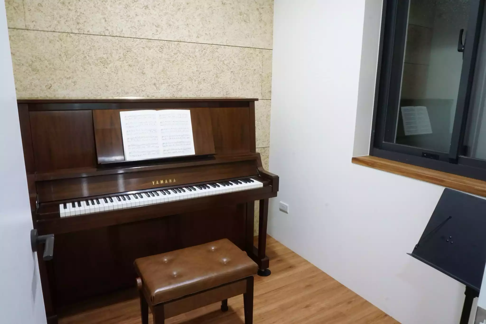
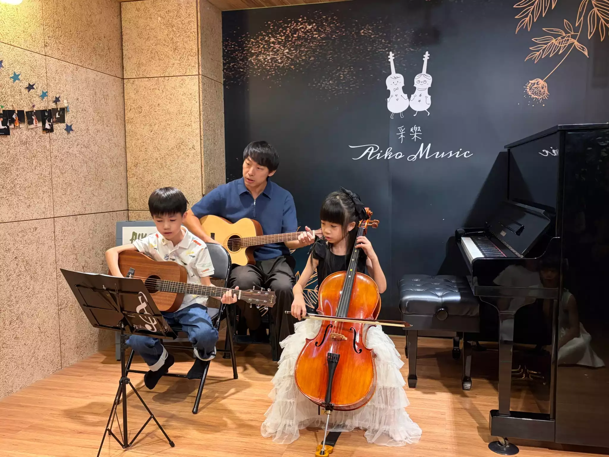

Why Choose Aiko Music
自 2017 年成立以來，采樂由兩位熱愛音樂的老師攜手創立。從最初的兩個人，到現在充滿無數愛樂者的琴音，我們見證了音樂帶給生命的奇妙變化。
為什麼要學音樂？ 學習音樂不僅是指尖上的技巧，更是情感的抒發與大腦的開發。對於成長中的學童，學琴能培養專注力、訓練克服困難的耐心（例如學會看譜、數拍子與背譜），在一次次的登台演出中，更能建立受用一生的自信心。
除了為學童扎根，我們也極力推廣成人音樂教學。對於成人而言，無論您是零基礎，還是想重拾兒時夢想，音樂都是下班後最棒的舒壓夥伴。在采樂，我們深信：「獨樂樂，眾樂樂，都很快樂！」
我們從教學細節到硬體設備，處處為學生與家長設想，只為打造新莊最專業、安心的藝術空間。
我們深知帶著龐大樂器通勤的辛苦。在采樂，教室貼心備妥了各尺寸的大提琴，來上課不用再辛苦揹著笨重的樂器！此外，我們也提供樂器出租與弦樂器配件、樂譜零售服務，讓您的學習之路輕鬆無負擔。

師生們的安全是采樂最重視的基石：
我們積極為學員創造舞台，並提供專業升學與檢定輔導：

這是一個為喜愛音樂的您敞開大門的家園。我們提供系統化的古典鋼琴、弦樂（大/中/小提琴）、吉他與烏克麗麗課程。無論是學齡兒童的音樂能力扎根，或是成人專屬的下班後舒壓課程，在采樂都能找到適合您的學習節奏。

此系統可輔助「鋼琴」與「提琴」的姿態檢視。請將設備放穩，讓鏡頭清楚拍攝到您的「上半身與雙手」。
系統將即時畫出關節連線，協助您檢視肩膀是否放鬆、手腕有無塌陷等演奏姿勢。若姿勢不良（如手腕過低），連線將變為 紅色 警示！